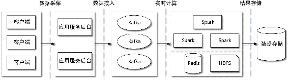
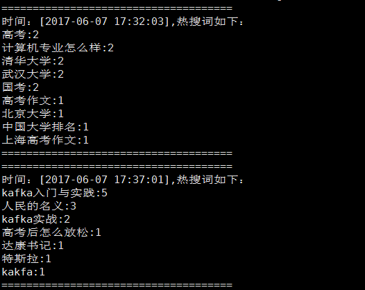

上一节通过Spark读取HDFS上的历史行情数据计算股票的新高与新低案例，简单介绍了Spark离线计算的应用。本节将通过一个简单的搜索关键词统计案例介绍Spark Streaming与Kafka集成在实时计算方面的应用。
实时统计一段时间内用户搜索的关键词，并将搜索次数最高的前10个关键词输出，本案例重点是展现Spark Streaming与Kafka集成的应用，因此并不关注业务本身的完整性。本例为了简单，将关键词总数排名前10的关键词称为热搜词，同时鉴于篇幅考虑，省去了关键词写入Kafka的步骤，简单地将计算结果直接打印在控制台。
本实例的主要目的是介绍Kafka与Spark Streaming的集成应用，因此我们先简单介绍两者集成相关内容。
在Spark 官方网站关于Spark Streaming与Kafka集成给出了两个依赖版本，一个是基于Kafka 0.8之后版本（spark-streaming-kafak-0-8）的，一个是基于Kafka 0.10及其之后版本（spark-streaming-kafka-0-10）的。spark-streaming-kafak-0-8版本Kafka与Spark Streaming集成有Receiver方式和Direct方式两种接收数据的方式。
Receiver方式是通过KafkaUtils.createStream()方法来创建一个ReceiverInputDStream对象。该方式是通过Kafka消费者高级API实现的，因此不用关注消费偏移量的处理。但这种方式在Spark任务执行异常时会导致数据丢失的情况，如果要保证数据的可靠性，需要开启WAL（Write Ahead Logs）。同时在Receiver方式中，Spark中的RDD分区和Kafka的分区并不是相关的，因此增加Kafka主题的分区数并不能增加Spark处理的并行度，而仅是增加接收器接收数据的并行度。
Direct是通过KafkaUtils.createDirectStream()方法创建一个InputDStream对象，使用的是Kafka消费者低级API。该方式Kafka的一个分区与Spark RDD对应，通过定期扫描所订阅Kafka每个主题的每个分区的最新偏移量以确定当前批处理数据偏移范围。与Receiver方式相比，Direct方式不需要维护一份WAL数据，由Spark Streaming程序自己控制偏移量的处理，通常通过检查点机制处理消费偏移量。
spark-streaming-kafak-0-10版本只提供Direct方式，同时底层使用的是Kafka新版消费者KafkaConsumer，因此通过KafkaUtils.createDirectStream()方法构建的DStream数据集是ConsumerRecord类型。同时提供了对消费偏移量相关的操作，不过这个版本相关的API目前还处于实验阶段，后续相关API可能会被调整。在本章的相关案例中使用的是与spark-streaming- kafak-0-10版本相关的依赖。
一个较完整的热词搜索统计处理平台的基础架构如图10-2所示。本例我们只关注Spark Streaming从Kafka拉取数据进行计算部分。

图10-2 热词实时统计平台的基础架构
我们通过Java语言编写Spark Streaming与Kafka集成统计一段时间内被搜索的关键词总数以及搜索次数排名的程序，首先需要在工程的pom.xml文件中添加Spark Streaming与Kafka集成的依赖包。
<dependency>
<groupId>org.apache.spark</groupId>
<artifactId>spark-streaming_2.11</artifactId>
<version>2.1.1</version>
</dependency>由于要统计一段时间内每个关键词被搜索的次数，因此需要用到Spark Streaming的窗口操作，同时我们将这个时间段内的计算中间状态进行存储，因此开启checkpoint功能，将中间状态存储在HDFS上。
现在，简要介绍Spark Streaming与Kafka集成实现热搜关键词统计的程序实现的基本步骤。
首先，实例化SparkConf对象，连接Spark Master。通过setAppName()方法指定应用程序在Spark集群的应用名称，该名称会在Spark Web UI上展示。通过setMaster()方法连接到Spark集群，可以通过指定Spark集群Master URL的方式，也可以以本地模式连接。本地模式连接时若是local[*]则表示使用逻辑CPU个数量的线程来本地化运行Spark，local[n]表示使用n个Worker线程本地化运行Spark，若以这种方式连接，建议n至少为2，因为Spark Streaming应用程序运行时，至少需要一个线程用于轮询接收数据，同时至少需要一个线程用于数据处理。通常情况下我们根据CPU的核数来设定此值。
在实例化SparkConf之后，创建StreamingContext，StreamingContext是Spark Streaming程序的入口。由于我们是用Java语言实现的，所以创建一个JavaStreamingContext，这里通过前面实例化的SparkConf来创建一个JavaStreamingContext，同时指定Spark Streaming任务执行的时间间隔。
StreamingContext创建好后，就需要实例化一个DStream对象，用于定义输入源。本例我们是将Spark Streaming与Kafka集成从Kafka实时消费数据，因此通过KafkaUtils.createDirectStream()方法创建一个JavaInputDStream。从Kafka相应主题消费数据，因为本质是一个消费者，因此该方法需要指定实例化KafkaConsumer的相关配置。同时该方法需要指定在Spark Executor上KafkaConsumer与分区分配的策略LocationStrategies，LocationStrategies提供了两种策略：一种是PreferBrokers策略，必须保证Executor和Kafka Broker在相同节点上；另一种是PreferConsistent策略，该策略将所订阅主题的分区分布在所有的Executor上。该方法另一个参数是指定消息的消费策略ConsumerStrategies，该策略提供了订阅主题的subscribe()方法和订阅指定主题特定分区的assign()方法，用法与KafkaConsumer API相同，这里不再赘述。KafkaUtils.createDirectStream()方法返回的DStream是一系列的ConsumerRecord。
然后，在创建DStream之后，就可以通过DStream相应的转换操作来实现流计算。例如，本例从DStream中获取ConsumerRecord之后，首先通过DStream.mapToPair()方法将读取的ConsumerRecord切分成元组，在后续处理时需要通过计算每个关键词的数量，即ConsumerRecord对应的Value，因此将元组的键和值都设置为消息Value。然后调用进行简单的过滤去掉空字符串，按Value统计每个时间窗口内关键词搜索次数，最后迭代每个RDD，将关键词按搜索次数进行排序打印排名前10的关键词。
最后，通过StreamingContext.start()方法启动Spark Streaming接收数据和处理数据的流程，并使用streamingContext.awaitTermination()方法等待处理结束。该方法会在调用StreamingContext.stop()方法手动结束或者应用程序发生异常时退出。
在介绍了该应用实现的基本思路之后，给出具体实现代码。首先创建一个WordsTopSearchJob的 Java 类，在该类中定义一个 initKafkaConsumerConf()方法和 println()方法，分别用于KafaConsumer参数配置和将计算结果排序输出。具体实现如代码清单10-4和代码清单10-5所示。
代码清单10-4 initKafkaConsumerConf()方法的具体实现
public static Map<String, Object> initKafkaConsumerConf(){
Map<String, Object> kafkaParams = new HashMap<>();
kafkaParams.put("bootstrap.servers", "server-1:9092,server-2:9092");
kafkaParams.put("key.deserializer", StringDeserializer.class);
kafkaParams.put("value.deserializer", StringDeserializer.class);
kafkaParams.put("group.id", "words-top-search");
kafkaParams.put("auto.offset.reset", "latest");
kafkaParams.put("enable.auto.commit", false);
return kafkaParams;
}代码清单10-5 println()方法的具体实现
public static void println(List<Tuple2<String, Long>> wordConutList) {
if (CollectionUtils.isNotEmpty(wordConutList)) {
List<Tuple2<String, Long>> sortList = new ArrayList<Tuple2<String,
Long>>(wordConutList);
sortList.sort(new Comparator<Tuple2<String, Long>>() {// 降序排列
@Override
public int compare(Tuple2<String, Long> t1, Tuple2<String, Long> t2) {
if (t2._2.compareTo(t1._2) > 0) {
return 1;
} else if (t2._2.compareTo(t1._2) < 0) {
return -1;
}
return 0;
}});
// 输出统计结果
System.out.println("=====================================");
System.out.println("时间：["+ DateFormatUtils.format(new Date(System.
currentTimeMillis()), "yyyy-MM-dd HH:mm:ss") + "],热搜词如下：");
for (Tuple2<String, Long> wordCount : sortList) {
System.out.println(wordCount._1 + ":" + wordCount._2);
}
System.out.println("=====================================");
}
}然后在main()方法中实现关键词统计相关功能，具体实现如代码清单10-6所示。以下代码是应用JDK8的Lambda表达式来实现的。
代码清单10-6 热搜关键词统计的具体实现
public static void main(String[] args) {
// 1.事例化SparkConf,用于连接Spark
SparkConf sparkConf = new SparkConf().setAppName("kafka-sparkstreaming").setMaster
("spark://server-1:7077");
// 2. 事例化StreamingContext 实例，每10s执行一次
JavaStreamingContext streamContext = new JavaStreamingContext(sparkConf, new
Duration(10000));
// 3. 初始化Kafka消费者相关配置
Map<String, Object> kafkaParams = initKafkaConsumerConf();
// 4.指定计算中间结果存储在文件系统即HDFS中，对应hdfs://server-1:9000/words-top-search
streamContext.checkpoint("/words-top-search");
try {
// 5. 订阅Kafka的"words-search"主题
final JavaInputDStream<ConsumerRecord<String, String>> inputDStream =
KafkaUtils.createDirectStream(
streamContext,
LocationStrategies.PreferConsistent(),// 指定分区与Executor对应策略
ConsumerStrategies.<String, String>
Subscribe(Arrays.asList("words-search"), kafkaParams));
// 6. 将读取单词切分成元组
JavaPairDStream<String, String> keyWords =
inputDStream.mapToPair(record->{return new
Tuple2<>(StringUtils.trimToEmpty(record.value()),
StringUtils.trimToEmpty(record.value()));});
// 7. 统计在窗口时间内单词被搜索次数，每5min滑动一次窗口，统计5min内单词被搜索的次数
keyWords.map((value) -> value._2())
.filter((word) -> {// 去掉空格
if (StringUtils.isBlank(word)) {
return false;
}
return true;
}).countByValueAndWindow(new Duration(5 * 60 * 1000), new Duration(5 * 60 * 1000))
// 指定每5min滑动一次时间窗口，处理前5min内的数据
.foreachRDD(records->{println(records.sortByKey(false).take(10));});
// 输出结果
streamContext.start(); // 启动Streaming开始接收数据和处理流程
streamContext.awaitTermination(); // 等待处理结束(手动结束或者程序运行发生异常错误)
} catch (InterruptedException e) {
if(null!=streamContext){
streamContext.close();
}
}
}至此，该应用具体实现的代码介绍完毕。现在通过Maven插件将该工程打包为jar文件，并上传至Spark服务器上。在提交任务到Spark运行之前先执行以下命令创建该程序订阅的主题：
kafka-topics.sh --zookeeper server-1:2181,server-2:2181,server-3:2181 --create
--topic words-search --partitions 3 --replication-factor 1然后，执行以下命令提交Spark Streaming任务执行。
./spark-submit --class com.kafka.action.spark.online.job.WordsTopSearchJob --master spark://server-1:7077 /usr/local/software/spark-2.1.0-bin-hadoop2.7/examples/ jars/kafka-spark.jar如果在运行时出现找不到Kafka相应类文件的情况，则将kafka-clients-0.10.1.1.jar文件复制到$SPARK_HOME/jars目录下，或在提交作业时通过--jars指定kafka-clients-0.10.1.1.jar的绝对路径，再次提交任务执行即可。
然后通过Kafka命令行启动一个生产者，命令如下：
kafka-console-producer.sh --broker-list server-1:9092,server-2:9092,server-3:9092 --topic words-search在控制台模拟关键词搜索，如在第一个5min时间内输入以下消息。
高考
国考
国考
高考作文
上海高考作文
高考
中国大学排名
清华大学
北京大学
计算机专业怎么样
计算机专业怎么样
武汉大学
清华大学
武汉大学在Spark Streaming程序运行的控制台可以看到，任务启动5min后，在控制台输出了统计结果，接着在Kafka生产者控制台继续输入以下消息：
人民的名义
人民的名义
达康书记
人民的名义
高考后怎么放松
kafka实战
kafka实战
kafka入门与实践
kafka入门与实践
kafka入门与实践
特斯拉
Kafka
kafka入门与实践
kafka入门与实践两个时间窗口的消息经由Spark Streaming程序处理之后，统计结果在控制台上的输出结果如图10-3所示。Kafka与Spark Streaming整合在实时计算方面的应用就介绍至此，相信通过本案例讲解之后，读者对开发实时流计算程序的步骤会有清晰的认识，这样在实际工作中根据具体业务需求就能够快速开发出满足需求的实时计算程序。

图10-3 热点搜索的统计结果